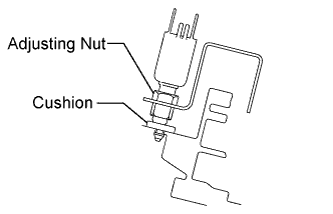

CLUTCH SWITCH (for RHD) > INSTALLATION |
| 1. INSTALL CLUTCH SWITCH ASSEMBLY |
 |
Install the clutch switch assembly and tighten the adjusting nut.
 |
Adjust the clutch switch so that the threaded portion of the clutch switch lightly contacts the cushion. Then tighten the adjusting nut and check the contact of the cushion and switch.
| 2. INSTALL CLUTCH PEDAL BRACKET SUB-ASSEMBLY |
Install the clutch pedal bracket sub-assembly (Click here).